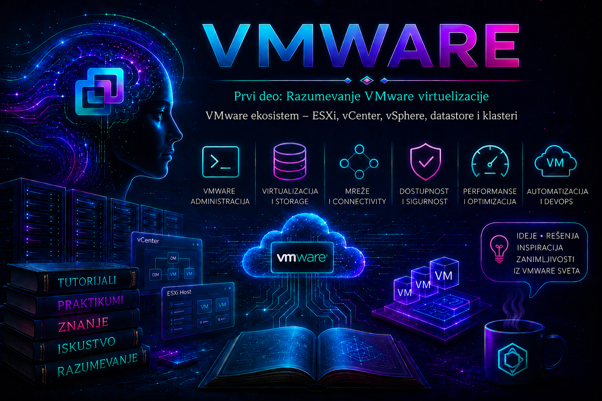

VMware

U prethodnim lekcijama upoznali smo virtuelizaciju, virtuelnu mašinu i hipervizor kao sloj koji deli fizičke resurse između više izolovanih sistema. Sada te pojmove povezujemo u celinu. VMware infrastruktura nije jedan program, već skup međusobno zavisnih komponenti koje zajedno obezbeđuju izvršavanje radnih opterećenja, centralno upravljanje, mrežnu povezanost, skladištenje podataka, dostupnost, raspodelu resursa, nadzor i kontrolu pristupa.
U maloj laboratoriji dovoljan je jedan fizički server sa instaliranim hipervizorom. U produkcionom data centru administrator mora da upravlja većim brojem hostova, hiljadama virtuelnih objekata, različitim storage i mrežnim sistemima, planiranim održavanjem i kvarovima koji ne smeju da prerastu u duži prekid poslovanja. Zbog toga svaka komponenta VMware ekosistema ima precizno mesto u arhitekturi i ne može se procenjivati samo prema tome „gde se klikće”, već prema tome koju zavisnost uvodi i kakve posledice njen kvar ima.
Klasičnu arhitekturu VMware vSphere platforme čine dva osnovna proizvoda: hipervizor VMware ESXi i sistem za centralno upravljanje VMware vCenter Server. Ta terminologija neposredno se primenjuje na vSphere 7 i vSphere 8 okruženja, koja su i dalje široko zastupljena. U dokumentaciji za VMware Cloud Foundation 9 i vSphere 9 hipervizor se ponovo naziva VMware ESX. Zbog toga administrator u aktuelnim izvorima može sresti oba naziva, ali ih ne treba nekritički mešati: tačan naziv, podržane funkcije i postupci moraju se proveriti za konkretnu glavnu verziju i izdanje.
Nakon Broadcomovog preuzimanja VMware-a promenjeni su proizvodni paketi, pretplatnički modeli i prava na pojedine mogućnosti. Dostupnost vCenter Servera, vMotion-a, vSphere HA, DRS-a, distribuiranih virtuelnih svičeva, vSAN-a i drugih funkcija zavisi od kupljenog paketa, pretplate i verzije. Zbog toga tehnička mogućnost prikazana u interfejsu nije sama po sebi dokaz da organizacija ima pravo da je koristi. Pre produkcionog projektovanja proveravaju se važeći Broadcom Product Guide, licencni portal, matrice interoperabilnosti i dokumentacija tačne verzije.
ESXi host – izvršni sloj infrastrukture
ESXi je hipervizor tipa 1 koji se instalira neposredno na podržani fizički server. On otkriva procesore, memoriju, mrežne adaptere, storage kontrolere i druge uređaje, a zatim preko VMkernel sloja raspoređuje te resurse virtuelnim mašinama. Fizički server na kome radi ESXi naziva se ESXi host.
Svaka virtuelna mašina ima virtuelni hardver, konfiguraciju i jedan ili više virtuelnih diskova. Gostujući operativni sistemi dele fizički host, ali ostaju logički izolovani. Izolacija smanjuje međusobni uticaj radnih opterećenja, ali nije apsolutna garancija raspoloživosti: preopterećenje procesora, iscrpljena memorija, zagušen storage, greška fizičkog uređaja ili kvar celog hosta mogu istovremeno pogoditi veći broj virtuelnih mašina.
ESXi može da radi i bez vCenter Servera. Administrator tada koristi ugrađeni VMware Host Client, dostupne lokalne konzolne mogućnosti i, kada je opravdano i privremeno omogućeno, ESXi Shell ili SSH. Takav samostalni host može pokretati virtuelne mašine, ali nema puni skup centralizovanih i klasterskih funkcija. Direktno upravljanje hostom zato je primereno laboratoriji, inicijalnoj konfiguraciji i oporavku upravljačke ravni, dok produkciona infrastruktura sa više hostova zahteva centralno upravljanje.
vCenter Server – centralna upravljačka ravan
vCenter Server održava inventar i omogućava centralnu administraciju ESXi hostova, virtuelnih mašina, datacentara, klastera, mreža, datastore objekata, alarma, zadataka, uloga i dozvola. U vSphere 7 i vSphere 8 podržani oblik implementacije jeste vCenter Server Appliance (VCSA), virtuelni appliance zasnovan na Photon OS-u; stari vCenter Server za Windows više nije aktuelni model implementacije.
Administrator se najčešće povezuje sa vCenter Serverom preko HTML5 vSphere Client interfejsa, a automatizacija se obavlja preko API-ja i VMware PowerCLI odnosno aktuelnog VCF PowerCLI okruženja. vCenter čuva željeni inventar i koordinira operacije kao što su klastersko upravljanje, vMotion, DRS preporuke, alarmiranje i kontrola pristupa.
Važno je razlikovati upravljačku ravan od ravni izvršavanja. Ako vCenter postane nedostupan, virtuelne mašine koje već rade na ESXi hostovima po pravilu nastavljaju da rade. Međutim, centralno upravljanje, deo klasterskih odluka, automatizacija i nove operacije mogu biti ograničeni. Zato vCenter nije „prekidač” kroz koji prolazi sav saobraćaj virtuelnih mašina, ali njegov kvar ipak predstavlja ozbiljan operativni incident.
Dostupnost vCenter Servera štiti se odgovarajućim backup-om appliance-a, ispravnim DNS-om i vremenom, nadzorom servisa i kapaciteta, dokumentovanim postupkom oporavka i, kada poslovni zahtev i podržana arhitektura to opravdavaju, dodatnim mehanizmima dostupnosti. Snapshot vCenter virtuelne mašine nije zamena za podržani file-based backup.
vSphere – naziv platforme, a ne treći hipervizor
VMware vSphere jeste platforma za serversku virtuelizaciju i upravljanje. U njenom jezgru nalaze se ESXi odnosno ESX i vCenter Server, dok širi skup mogućnosti obuhvata vMotion, Storage vMotion, vSphere HA, DRS, upravljanje životnim ciklusom, standardne i distribuirane virtuelne mreže, bezbednosne kontrole, nadzor i integracije sa storage, backup i automatizacionim sistemima.
Zbog toga nije ispravno reći da se „vSphere instalira pored ESXi-ja i vCenter-a” kao treća nezavisna komponenta. ESXi je izvršni sloj, vCenter je centralni upravljački sistem, a vSphere je naziv platforme i proizvodnog skupa u kome te komponente sarađuju.
vCenter organizuje objekte u hijerarhijski inventar. Datacenter je logički kontejner za compute, mrežne i storage objekte. On nije fizička zgrada, lokacija ni automatska granica zaštite, iako ga organizacija može projektovati tako da odražava stvarnu lokaciju ili administrativnu celinu.
U datacenter se dodaju samostalni hostovi ili klasteri. Folderi mogu dodatno organizovati hostove, virtuelne mašine, mreže i datastore objekte, dok dozvole primenjene na nadređeni objekat mogu naslediti objekti ispod njega. Zbog tog nasleđivanja inventar je istovremeno tehnička i bezbednosna struktura: nepromišljena reorganizacija ili preširoka dozvola na visokom nivou može zahvatiti mnogo više sistema nego što je administrator nameravao.
| Objekat | Osnovna uloga | Važna administratorska napomena |
|---|---|---|
| vCenter Server | Centralno upravljanje jednim ili više inventara | Njegov kvar obično ne zaustavlja aktivne VM-ove, ali ograničava upravljanje i orkestraciju. |
| Datacenter | Logički kontejner za compute, mrežu i storage | Nije sam po sebi HA ili bezbednosna granica. |
| Cluster | Grupa hostova kojom se upravlja kao zajedničkim compute skupom | HA i DRS moraju se zasebno omogućiti, podesiti i licencno pokriti. |
| ESXi host | Izvršava virtuelne mašine i pruža fizičke resurse | Mora biti hardverski, mrežno, storage i verzijski kompatibilan sa projektovanom celinom. |
| Resource Pool | Deli i prioritetizuje CPU i memorijske resurse | Shares deluju pri konkurenciji, reservations garantuju, a limits mogu skriveno ograničiti performanse. |
| Virtual Machine | Izolovano virtuelno radno opterećenje | Raspoloživost zavisi od compute, mrežnih, storage i gostujućih komponenti. |
Klaster – zajedničko upravljanje compute resursima
vSphere cluster je logička grupa ESXi hostova kojima vCenter upravlja kao zajedničkim skupom procesorskih i memorijskih resursa. Samo grupisanje hostova u klaster ne uključuje automatski svaku naprednu funkciju. Administrator zasebno projektuje i uključuje HA, DRS, vSphere Lifecycle Manager model, EVC i druge mogućnosti koje su podržane i licencirane.
Produkcioni hostovi u istom klasteru treba da imaju usklađene mrežne oznake, odgovarajuću storage vidljivost, kompatibilne procesore i doslednu konfiguraciju. Enhanced vMotion Compatibility (EVC) može izložiti zajednički skup CPU instrukcija i tako olakšati vMotion između različitih generacija kompatibilnih procesora istog proizvođača. EVC nije način da se proizvoljno mešaju nekompatibilne arhitekture i ne zamenjuje proveru VMware Compatibility Guide-a.
Pri određivanju veličine klastera ne sabiraju se samo ukupni CPU i RAM kapaciteti. Mora ostati dovoljno rezervnog kapaciteta da radna opterećenja prežive planirani broj otkaza hostova i period održavanja. Ako klaster radi blizu granice, HA može uspešno restartovati virtuelne mašine samo na papiru, dok u stvarnom incidentu neće postojati dovoljno resursa za njihov prihvatljiv rad.
vSphere HA – ponovno pokretanje nakon kvara
vSphere High Availability (HA) nadzire članove klastera i, nakon potvrđenog kvara hosta, pokušava da pogođene virtuelne mašine ponovo pokrene na preživelim hostovima. To nije neprekidna migracija izvršnog stanja: operativni sistem i aplikacija doživljavaju prekid koji traje tokom detekcije kvara, izbora novog hosta i podizanja virtuelne mašine.
HA zato ne zamenjuje aplikativni klaster, replikaciju podataka, backup ili disaster recovery. Ako je zajednički datastore nedostupan svim hostovima, ako su oštećeni podaci virtuelne mašine ili aplikacija ne može da se oporavi nakon grubog prekida, samo ponovno pokretanje VM-a neće rešiti osnovni problem.
Admission Control određuje koliko kapaciteta klaster čuva za oporavak. Isključivanje te kontrole može trenutno povećati broj VM-ova koje je moguće uključiti, ali uklanja dokaz da klaster ima rezervu za projektovani kvar. U produkciji se takva promena ne koristi kao trajno rešenje za nedostatak kapaciteta.
DRS – raspodela opterećenja, a ne stvaranje novih resursa
Distributed Resource Scheduler (DRS) analizira potražnju i dostupnost resursa u klasteru i daje ili automatski primenjuje preporuke za raspored virtuelnih mašina. Za premeštanje uključenih VM-ova između hostova koristi vMotion. DRS poboljšava raspodelu postojećih resursa, ali ne može ukloniti fizičko ograničenje klastera koji nema dovoljno CPU-a, memorije ili storage performansi.
Režim automatizacije određuje da li administrator samo dobija preporuke ili sistem izvršava migracije. Pre povećanja automatizacije proveravaju se kompatibilnost hostova, propusnost vMotion mreže, affinity i anti-affinity pravila, licencna prava i ponašanje aplikacija. Loše pravilo može sprečiti optimalan raspored ili otežati HA oporavak.
vMotion i Storage vMotion
vMotion premešta aktivno izvršavanje virtuelne mašine sa jednog kompatibilnog hosta na drugi uz vrlo kratak završni zastoj koji aplikacija u pravilno projektovanom okruženju najčešće ne primeti. Ova mogućnost olakšava održavanje hostova i balansiranje klastera, ali zahteva ispravnu VMkernel mrežu za vMotion, odgovarajuću kompatibilnost i ispunjene storage i mrežne preduslove.
Storage vMotion premešta datoteke virtuelne mašine između datastore objekata, često bez gašenja VM-a. Operacija proizvodi dodatno storage opterećenje, pa se pre pokretanja proveravaju slobodan prostor, latency, aktivni backup i snapshot poslovi, ograničenja virtuelnih diskova i očekivano trajanje. Ni jedna vrsta migracije nije backup: ona premešta postojeće stanje, uključujući njegove logičke greške.
Datastore je logički storage objekat koji ESXi koristi za čuvanje datoteka virtuelnih mašina, virtuelnih diskova, ISO slika, template-a i drugih podataka. Datastore nije sinonim za fizički disk niti mora biti zajednički svim hostovima. Može biti zasnovan na lokalnom uređaju, VMFS sistemu datoteka na blok storage-u, NFS deljenju, vSAN datastore-u ili drugom podržanom mehanizmu.
VMFS datastore se tipično formira nad blok uređajem odnosno LUN-om predstavljenim hostovima preko FC, FCoE ili iSCSI infrastrukture, dok NFS datastore koristi mrežni file storage. vSAN objedinjuje lokalne uređaje članova vSAN klastera u distribuirani datastore zasnovan na pravilima. Izbor menja način redundantnosti, zaključavanja, skaliranja, nadzora i oporavka, pa datastore ne treba projektovati samo prema nominalnom kapacitetu.
| Tip storage-a | Način pristupa | Tipična vrednost | Ključna provera |
|---|---|---|---|
| Lokalni VMFS | Lokalni disk ili RAID kontroler hosta | Laboratorija, posebna lokalna radna opterećenja | Kvar hosta može istovremeno ukloniti pristup VM datotekama. |
| Zajednički VMFS | FC/iSCSI/FCoE blok uređaj | Klasteri, vMotion i HA arhitekture | Dosledna LUN prezentacija, multipathing i pravilna politika putanja. |
| NFS | IP mreža i NFS server | Jednostavno file-based deljenje i skaliranje | Mrežna redundansa, DNS/rutiranje, dozvole i verzija protokola. |
| vSAN | Distribuirani storage članova klastera | HCI arhitektura upravljana pravilima | Kompatibilnost uređaja, mreža, fault domains i usklađenost sa storage politikama. |
Zajednička vidljivost datastore-a svim relevantnim hostovima pojednostavljuje HA i migracije, ali sama vidljivost nije dokaz zdravlja. Administrator prati slobodan prostor, latency, IOPS, throughput, putanje do uređaja, greške adaptera, APD/PDL događaje i stanje fizičkog storage sistema. Datastore koji je prikazan kao povezan može istovremeno imati neprihvatljivo kašnjenje.
Datastore cluster nije isto što i compute cluster. To je grupa datastore objekata kojom može upravljati Storage DRS radi preporuka ili automatizovanog raspoređivanja i migracije VM diskova. Ova funkcija zavisi od verzije, licence i kompatibilnosti, a automatizacija se uvodi tek nakon razumevanja storage ograničenja, politika i ponašanja array sistema.
Datoteke virtuelne mašine i snapshot rizik
Konfiguraciju virtuelne mašine opisuje datoteka .vmx, dok se virtuelni diskovi najčešće predstavljaju .vmdk datotekama i pripadajućim podacima. Datastore može sadržati i swap, log, snapshot i druge pomoćne datoteke. Administrator ne treba ručno da menja ili briše te datoteke samo prema nazivu, jer inventar i aktivni lanci diskova mogu biti drugačiji nego što se na prvi pogled čini.
VMware snapshot čuva tačku stanja tako što promene nakon snapshot-a usmerava u delta disk. Snapshot zavisi od osnovnog virtuelnog diska, nastavlja da raste i može povećati storage opterećenje i vreme konsolidacije. Zvanična praksa izričito ga ne smatra backup-om. Snapshot se koristi kratkotrajno i kontrolisano pre promene za koju postoji jasan plan povratka; ne ostavlja se kao dugoročna kopija niti se lanac održava bez nadzora.
Pre pravljenja snapshot-a proveravaju se slobodan prostor, stanje postojećeg lanca, aplikativna konzistentnost i aktivni backup poslovi. Prema aktuelnoj Broadcom preporuci, jedan snapshot ne bi trebalo zadržavati duže od približno 72 sata, a broj snapshot-a treba držati znatno ispod tehnički podržanog maksimuma. Brisanje snapshot-a znači konsolidaciju podataka, a ne trenutno oslobađanje bez I/O posledica.
ESXi povezuje virtuelne i fizičke mreže preko standardnog ili distribuiranog virtuelnog sviča. vSphere Standard Switch (VSS) konfiguriše se po hostu, dok vSphere Distributed Switch (VDS) centralizuje konfiguraciju preko vCenter Servera i zahteva odgovarajuće licencno pravo. Fizički mrežni adapteri hosta pojavljuju se kao uplink veze virtuelnog sviča.
Port Group predstavlja skup portova sa zajedničkom mrežnom politikom, kao što su VLAN identifikator, teaming i bezbednosne postavke. VM mrežni adapter priključuje se na odgovarajuću port grupu. Isti naziv port grupe na dva standardna sviča ne garantuje istu VLAN ili teaming konfiguraciju, zbog čega nedoslednost između hostova može izazvati gubitak mreže posle vMotion-a.
VMkernel adapter obezbeđuje mrežni interfejs samom ESXi hostu za servise kao što su management, vMotion, IP storage, vSAN i drugi podržani tokovi. Te tokove treba logički razdvojiti, a u produkciji obezbediti redundantne fizičke putanje i kontrolisane VLAN-ove. Izolacija na VLAN nivou nije zamena za firewall, kontrolu pristupa i bezbedno upravljanje privilegijama.
Management mreža zaslužuje posebnu zaštitu jer njen prekid može učiniti host nedostupnim vCenter Serveru i administratorima iako VM-ovi nastavljaju da rade. Promene management VLAN-a, uplink-a ili VMkernel konfiguracije zato se izvode kroz out-of-band konzolu ili uz potvrđen rollback put, nikada oslanjanjem samo na SSH sesiju koja će biti prekinuta istom promenom.
Template je standardizovana osnova za kreiranje novih virtuelnih mašina, dok Content Library centralizuje template-e, OVF/OVA pakete, ISO slike i druge sadržaje, uz mogućnost objavljivanja ili sinhronizacije u podržanim scenarijima. Oni ubrzavaju isporuku samo ako se održavaju: zastareo template može dosledno širiti neažuriran operativni sistem, pogrešnu mrežnu konfiguraciju ili bezbednosni propust.
Resource Pool organizuje CPU i memorijske resurse klastera ili samostalnog hosta. Shares određuju relativni prioritet tek kada postoji konkurencija, reservation unapred garantuje deo kapaciteta, a limit postavlja gornju granicu. Nepotrebni memorijski ili CPU limit može izazvati loše performanse i kada fizički klaster ima slobodne resurse, pa se vrednosti postavljaju samo uz dokumentovanu nameru i merenje.
VMware ekosistem funkcioniše kao lanac zavisnosti. VM može imati dovoljno vCPU-a i memorije, ali ipak biti nedostupan zbog pogrešnog VLAN-a, punog datastore-a, DNS kvara, izgubljene storage putanje ili problema u gostujućoj aplikaciji. Zbog toga administrator najpre određuje obim incidenta: da li je pogođen jedan VM, svi VM-ovi na hostu, jedan datastore, jedan klaster ili cela upravljačka ravan.
| Otkaz | Šta može nastaviti da radi | Šta je ugroženo | Ključna zaštita |
|---|---|---|---|
| vCenter nedostupan | Aktivni VM-ovi na dostupnim hostovima | Centralno upravljanje, deo orkestracije i novih klasterskih operacija | VCSA backup, DNS/NTP, nadzor servisa i dokumentovan restore |
| Jedan ESXi host otkaže | VM-ovi na drugim hostovima | VM-ovi na otkazalom hostu | HA, rezervni kapacitet i pristupačan zajednički storage |
| Zajednički datastore otkaže | VM-ovi čiji diskovi nisu na tom datastore-u | Svi VM-ovi i podaci koji zavise od pogođenog storage-a | Storage redundansa, multipathing, backup i DR |
| Management mreža otkaže | Podatkovni saobraćaj VM-ova može ostati aktivan | Upravljanje hostom i komunikacija sa vCenterom | Redundantni uplink-ovi, out-of-band pristup i kontrolisana promena |
| VM operativni sistem ili aplikacija otkaže | Hipervizor i drugi VM-ovi | Konkretna usluga | Aplikativni monitoring, HA unutar aplikacije, backup i recovery procedura |
Visoka dostupnost nije jedna opcija koju uključujemo, već rezultat pravilno projektovanih compute, storage, mrežnih, upravljačkih i aplikativnih slojeva. HA ne zamenjuje backup, vMotion ne zamenjuje disaster recovery, multipathing ne zamenjuje storage replikaciju, a redundantni uplink ne pomaže ako oba fizička puta završavaju na istom neispravnom sviču.
Cilj, topologija i preduslovi
Cilj vežbe je da administrator pronađe ključne objekte u laboratorijskom vSphere okruženju, dokaže njihove veze i razlikuje trenutno stanje od pretpostavke. Vežba ne uključuje migraciju, promenu mreže, uključivanje HA/DRS-a niti brisanje objekata.
vCenter Server
└── Datacenter: LAB-DC
└── Cluster: LAB-CLUSTER
├── ESXi host: esxi01.lab.example
├── ESXi host: esxi02.lab.example
├── Datastore: LAB-DS01
├── Port Group: LAB-VM-NET
└── Virtual Machine: lab-vm01Za punu vežbu potrebni su laboratorijski vCenter Server, najmanje jedan ESXi host, jedan datastore i jedna testna virtuelna mašina. Preporučena topologija ima dva hosta kako bi se videli klasterski odnosi. Nalog treba da ima read-only pristup celom laboratorijskom datacenter objektu. Za PowerCLI deo potreban je administratorski računar sa instaliranim VMware PowerCLI ili odgovarajućim VCF PowerCLI modulima za korišćenu verziju.
Rizik GUI i CLI inventarisanja je nizak jer se koriste read-only operacije. Ipak, ne treba prikazivati produkcione IP adrese, serijske brojeve, korisnička imena ili druge osetljive podatke u javnim snimcima ekrana i izveštajima.
Vežba 1 – pregled inventara u vSphere Client-u
- Prijavite se na vSphere Client preko FQDN adrese vCenter Servera i proverite da li pregledač prikazuje očekivani sertifikat.
- Otvorite prikaz Hosts and Clusters i zabeležite naziv datacentra, klastera i svih hostova.
- Izaberite klaster i na stranici Summary proverite ukupan CPU, memoriju, broj hostova i broj virtuelnih mašina.
- Otvorite Configure i utvrdite da li su HA i DRS uključeni. Ne menjajte njihove postavke.
- Izaberite svaki host i proverite connection state, maintenance mode, verziju, build i osnovnu potrošnju resursa.
- Otvorite prikaz Storage. Za svaki datastore zabeležite tip, kapacitet, slobodan prostor i hostove koji ga vide.
- Otvorite prikaz Networking i utvrdite da li okruženje koristi standardni ili distribuirani svič. Za testni VM pronađite port grupu na koju je povezan.
- Izaberite testni VM i na stranici Summary pronađite trenutni host, datastore i mrežu.
- Pregledajte Tasks and Events za poslednjih sat vremena i proverite da li postoje neuspele operacije ili promene koje objašnjavaju neuobičajeno stanje.
Očekivani rezultat je dokumentovana putanja od vCenter inventara do konkretnog VM-a, zajedno sa hostom, datastore-om i port grupom od kojih VM zavisi. Vežba je uspešna tek kada se svaki odnos potvrdi u interfejsu, a ne kada je samo nacrtana očekivana topologija.
Vežba 2 – read-only inventar pomoću PowerCLI-ja
Sledeće komande izvršavaju se u PowerShell sesiji na administratorskom računaru. Zamenite primer FQDN adresom laboratorijskog vCenter Servera. Komanda Connect-VIServer uspostavlja sesiju, dok ostale prikazane komande čitaju stanje i ne menjaju inventar.
Connect-VIServer -Server "vcsa.lab.example"
Get-Datacenter |
Select-Object Name
Get-Cluster |
Select-Object Name, HAEnabled, DrsEnabled, DrsAutomationLevel
Get-VMHost |
Select-Object Name, ConnectionState, PowerState, Version, Build,
@{Name="CpuUsagePercent";Expression={
if ($_.CpuTotalMhz -gt 0) {
[math]::Round(100 * $_.CpuUsageMhz / $_.CpuTotalMhz, 1)
}
}},
@{Name="MemoryUsagePercent";Expression={
if ($_.MemoryTotalGB -gt 0) {
[math]::Round(100 * $_.MemoryUsageGB / $_.MemoryTotalGB, 1)
}
}}
Get-Datastore |
Select-Object Name, Type,
@{Name="CapacityGB";Expression={[math]::Round($_.CapacityGB, 1)}},
@{Name="FreeSpaceGB";Expression={[math]::Round($_.FreeSpaceGB, 1)}},
@{Name="FreePercent";Expression={
if ($_.CapacityGB -gt 0) {
[math]::Round(100 * $_.FreeSpaceGB / $_.CapacityGB, 1)
}
}}
Get-VM -Name "lab-vm01" |
Select-Object Name, PowerState,
@{Name="Host";Expression={$_.VMHost.Name}},
@{Name="Datastores";Expression={
(Get-Datastore -VM $_ | Select-Object -ExpandProperty Name) -join ", "
}}
Get-VM -Name "lab-vm01" |
Get-NetworkAdapter |
Select-Object Parent, Name, Type, NetworkName, ConnectionState
Disconnect-VIServer -Server "vcsa.lab.example" -Confirm:$falseOčekivani izlaz sadrži iste objekte i odnose koji su pronađeni u vSphere Client-u. Ako GUI i PowerCLI prikazuju različite rezultate, prvo proverite da li ste povezani sa istim vCenter Serverom, da li koristite isti identitet i da li njegov opseg dozvola obuhvata iste objekte. Prazan rezultat nije automatski dokaz da objekat ne postoji; može značiti da nalog nema pravo da ga vidi.
Vežba 3 – provera datastore vidljivosti po hostovima
Cilj je da se utvrdi da li svi hostovi klastera vide očekivani datastore. Provera je read-only i bezbedna za produkciju kada se izvodi nalogom sa minimalnim potrebnim privilegijama.
$cluster = Get-Cluster -Name "LAB-CLUSTER"
Get-VMHost -Location $cluster | ForEach-Object {
$vmhost = $_
Get-Datastore -VMHost $vmhost |
Select-Object `
@{Name="VMHost";Expression={$vmhost.Name}},
Name,
Type,
State,
@{Name="FreeGB";Expression={[math]::Round($_.FreeSpaceGB, 1)}}
} | Sort-Object Name, VMHostZa zajednički datastore očekuje se zapis za svaki host koji treba da ga koristi. Ako datastore nedostaje samo na jednom hostu, nemojte ga odmah ponovo formatirati, uklanjati ili nasumično reskenirati adaptere. Prvo proverite obim problema, poslednje storage promene, prezentaciju LUN-a ili NFS export-a, adaptere, putanje i događaje.
Vežba 4 – mapiranje jednog VM-a kroz sve slojeve
Za testni VM napravite evidenciju koja sadrži naziv VM-a, operativno stanje, trenutni host, klaster, datastore, port grupu, IP adresu ako je pouzdano prijavljena preko VMware Tools-a i stanje poslednjeg backup posla. Zatim odgovorite na sledeća pitanja:
- Da li drugi host može pristupiti datastore-u na kome se nalaze diskovi VM-a?
- Da li na drugom hostu postoji mreža sa istim nazivom i stvarno istom VLAN konfiguracijom?
- Da li klaster ima dovoljno rezervnog kapaciteta za ponovno pokretanje VM-a nakon otkaza jednog hosta?
- Da li aplikacija unutar VM-a može pravilno da se oporavi posle grubog restarta?
- Postoji li proverljiv backup i kada je poslednji put testiran restore?
Kriterijum završetka nije samo pronalaženje VM-a u inventaru, već dokaz da su compute, mrežne, storage i recovery zavisnosti poznate. Time se pravi razlika između vidljivosti objekta i stvarne spremnosti za incident.
Simptom: jedan ESXi host u vCenter inventaru ima stanje Disconnected ili Not Responding, dok korisnici i dalje pristupaju aplikacijama na njegovim virtuelnim mašinama. Obim: najpre utvrditi da li je pogođen jedan host, svi hostovi klastera ili sam vCenter. Posledica: aktivni VM-ovi mogu nastaviti da rade, ali upravljanje, monitoring i klasterske operacije nad hostom nisu pouzdani.
- Proverite da li je vSphere Client dostupan i da li drugi hostovi normalno odgovaraju. Ako su svi hostovi istovremeno nedostupni, istražite vCenter i management mrežu pre pojedinačnih hostova.
- Pregledajte Tasks and Events, alarme i vreme poslednje poznate promene. Zabeležite da li je incident počeo posle mrežne, DNS, firewall, sertifikatske, storage ili patch promene.
- Sa administratorske stanice proverite DNS razrešenje i mrežnu dostupnost management adrese. Uspešan ping nije dovoljan dokaz da management servisi rade, a neuspešan ping nije konačan dokaz kvara ako je ICMP filtriran.
- Koristite out-of-band konzolu servera i proverite da li je ESXi aktivan, da li management VMkernel interfejs ima očekivanu adresu i da li fizički uplink-ovi imaju vezu.
- Ako je SSH već bezbedno omogućen u laboratoriji, prikupite read-only podatke pre restartovanja servisa.
esxcli network ip interface list
esxcli network nic list
esxcli storage core path list
esxcli system version get
tail -n 100 /var/log/hostd.log
tail -n 100 /var/log/vpxa.log
tail -n 100 /var/log/vmkernel.log
hostd.log opisuje lokalne operacije upravljanja hostom, vpxa.log komunikaciju agentskog sloja sa vCenter Serverom, a vmkernel.log događaje jezgra, uređaja, storage-a i mreže. Na VCSA sistemu centralni vpxd.log nalazi se unutar /var/log/vmware/vpxd/. Logove treba uskladiti prema istom vremenskom periodu i vremenskoj zoni; izdvojena poruka bez prethodnih događaja često vodi pogrešnom zaključku.
Mogući neposredni uzroci su prekid management VLAN-a, neispravan uplink, DNS ili NTP problem, firewall blokada, preopterećeni management agenti ili nedostupnost samog vCenter Servera. Osnovni uzrok može biti nedokumentovana mrežna promena, nedostatak redundantnosti, iscrpljen kapacitet ili konflikt više intenzivnih infrastrukturnih poslova.
Restart management agenata menja stanje hosta i nije prvi dijagnostički korak. Može prekinuti aktivne administratorske zadatke i privremeno pogoršati vidljivost, pa se primenjuje tek nakon prikupljenih dokaza, provere aktivnih backup, migracionih i storage poslova i konsultovanja postupka za konkretnu verziju. U produkciji se izbegava neselektivna komanda za restart svih servisa kada nisu procenjene posledice.
Privremeno zaobilazno rešenje može biti direktan pristup Host Client-u radi nadzora kritičnih VM-ova, pod uslovom da je identitet hosta proverljiv i da se ne prave promene koje bi se sukobile sa vCenter inventarom. Trajna korekcija rešava utvrđeni mrežni, DNS, kapacitivni ili servisni uzrok i vraća redundantnost.
Oporavak je potvrđen tek kada host ostane u stanju Connected, Tasks and Events ne prikazuju nove greške, management komunikacija je stabilna, datastore objekti i mreže su dostupni, a aplikativni monitoring potvrdi normalan rad. Incident treba dokumentovati zajedno sa vremenom, dokazima, osnovnim uzrokom, korekcijom i merom koja sprečava ponavljanje.
- Dokumentujte odnose između vCenter Servera, datacentara, klastera, hostova, mreža, datastore objekata i poslovnih servisa.
- Projektujte kapacitet prema stanju posle kvara, a ne samo prema potrošnji u normalnom radu.
- Koristite FQDN, pouzdan DNS i usklađeno vreme za vCenter, hostove, identitetske i povezane sisteme.
- Primjenjujte najmanje potrebne privilegije i odvojite svakodnevne administratorske naloge od naloga za oporavak.
- Pre mrežne ili storage promene obezbedite out-of-band pristup, zapis početnog stanja, maintenance window i povratni plan.
- Pratite ne samo kapacitet nego i latency, contention, putanje, događaje i trendove rasta.
- Snapshot koristite kratkotrajno i kontrolisano; backup i proverljiv restore tretirajte kao odvojenu obavezu.
- Ne pretpostavljajte da isti nazivi port grupa ili datastore objekata znače istu konfiguraciju na svim hostovima.
- Pre automatizacije DRS-a i drugih politika proverite izuzetke, affinity pravila, licencu i ponašanje aplikacija.
- Kompatibilnost hardvera, firmware-a, drajvera i verzija proveravajte u zvaničnim matricama pre instalacije ili nadogradnje.
- SSH i ESXi Shell držite isključene kada nisu potrebni, a njihovu privremenu upotrebu evidentirajte.
- Svaki incident istražujte od najmanje invazivne provere ka promenama stanja: obim, poslednje promene, događaji, metrike, logovi, hipoteza, potvrda, korekcija i validacija.
Lekcija je uspešno savladana kada možete da:
- razlikujete ESXi odnosno ESX, ESXi host, vCenter Server i vSphere platformu;
- objasnite razliku između upravljačke ravni vCenter Servera i izvršavanja VM-ova na hostovima;
- nacrtate inventar od datacentra i klastera do hosta, datastore-a, mreže i virtuelne mašine;
- razlikujete compute cluster od datastore cluster-a i shared storage od lokalnog datastore-a;
- objasnite šta vMotion, Storage vMotion, HA i DRS rade, kao i šta ne mogu da obezbede;
- utvrdite na kom hostu, datastore-u i mreži radi konkretan VM koristeći GUI i read-only PowerCLI;
- proverite da li svi članovi klastera vide očekivani zajednički datastore;
- objasnite zašto snapshot nije backup i koje rizike uvodi dugotrajni snapshot lanac;
- procijenite posledice kvara vCenter Servera, hosta, management mreže ili zajedničkog storage-a;
- prikupite događaje, stanje i relevantne logove pre korektivne promene;
- razlikujete privremeno zaobilazno rešenje od trajne mere koja uklanja osnovni uzrok.
VMware ekosistem postaje razumljiv kada svaku komponentu posmatramo kroz njenu odgovornost. ESXi odnosno ESX izvršava radna opterećenja, vCenter upravlja infrastrukturom, klaster objedinjuje compute kapacitet, datastore predstavlja logički storage prostor, a virtuelna mreža povezuje VM-ove, host servise i fizičku infrastrukturu. vSphere je platforma koja te slojeve povezuje u operativnu celinu.
Administratorska odgovornost počinje tamo gde se završava jednostavan dijagram. Klaster nije visoko dostupan bez rezervnog kapaciteta i ispravnih zavisnosti; datastore nije zdrav samo zato što je vidljiv; HA ne obezbeđuje neprekidan rad aplikacije; vMotion i snapshot nisu backup; vCenter kvar ne mora ugasiti VM-ove, ali može ozbiljno ograničiti upravljanje. Pouzdana infrastruktura nastaje tek kada se svaka pretpostavka potvrdi inventarom, metrikama, događajima, logovima i testiranim postupkom oporavka.
Ovim pregledom izgrađena je mapa koja će u narednim lekcijama biti razložena na detaljne administratorske zadatke. Sledeći korak je dublje upoznavanje ESXi hosta, njegovih resursa, servisa i mesta u životnom ciklusu virtuelne infrastrukture.
Kratak urednički izveštaj: obogaćene su arhitektura inventara, verzijski kontekst vSphere 8/9, klasteri, HA/DRS, storage, mreža, dostupnost, praktikum i troubleshooting. Ponavljanja pojmova spojena su u funkcionalne celine. Ispravljene su granice HA, vMotion-a, datastore-a i snapshot-a, kao i aktuelni naziv ESX u verziji 9. Korišćene su Prism klase `language-none`, `language-powershell` i `language-bash`; sve su standardne, ali proveri da su uključene u vašoj Prism verziji. U celom dokumentu treba da postoji tačno jedan poziv `/js/syntax/prism.js` neposredno pre `